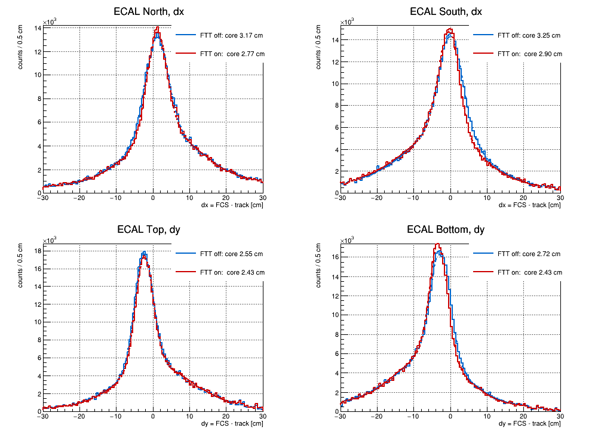
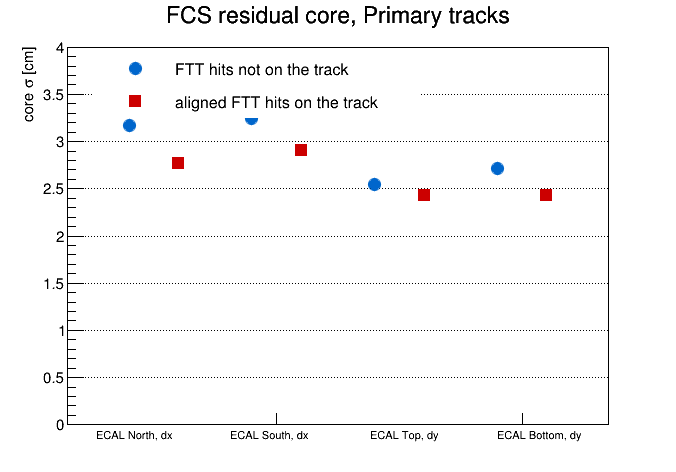

STAR forward upgrade, FST/sTGC geometry and alignment — Alignment program | Geometry and mapping | Tracking performance
What putting sTGC hits on the track actually buys. The geometry these rely on is on the geometry page; the alignment that produced the constants is on the alignment page.
Every campaign up to here ran fttNoAdd=1: the tracker searched for sTGC hits and filled the diagnostics, but never put one on a track. So the planar FTT measurement had never executed in the Kalman fit. This run turns that on. It differs from the iteration-2 campaign in one field (DIAG "2,1,0"→"2,0,0"), same 90 files and same 13000 events each, which makes iteration 2 an exact control arm. 90/90 jobs clean.
Pickup probability per sTGC station, Primary tracks, 4.2M tracks:
| station | 1 | 2 | 3 | 4 | mean |
|---|---|---|---|---|---|
| x — V strips | 0.2297 | 0.2052 | 0.2165 | 0.2407 | 0.223 |
| y — H strips | 0.1835 | 0.1828 | 0.1965 | 0.2043 | 0.192 |
| diagonal u/v | 0.0000 | 0.0000 | 0.0000 | 0.0000 | 0.0000 |
|
Pickup split by quadrant (Pos+Neg summed, x/y per station):
| quadrant | tracks | s1 | s2 | s3 | s4 |
|---|---|---|---|---|---|
| North-top | 1.22M | .321/.240 | .318/.285 | .293/.263 | .342/.274 |
| North-bottom | 0.94M | .178/.147 | .169/.125 | .126/.134 | .165/.138 |
| South-top | 1.16M | .259/.218 | .162/.195 | .281/.247 | .284/.258 |
| South-bottom | 0.90M | .122/.100 | .146/.089 | .124/.106 | .127/.110 |
The quadrant table above uses all tracks as the denominator, which bakes in the sTGC design acceptance gap below the beampipe. FST covers nearly 2π while the four sTGC pentagons cluster above and to the sides of the beampipe, so FST-seeded tracks projecting into the gap can never pick up a hit and the raw number is diluted by geometry working as designed.
The existing histograms could not separate the two, because h2FttProjXY is filled only inside the loop over FTT points — i.e. only for tracks that already matched. Adding the missing denominator (h2FttProjAllXY, the projection of every track to each plane) and restricting to cells where the detector demonstrably is:
| disk | orientation | top | bottom | bot/top |
|---|---|---|---|---|
| 0 | x (V) | 0.313 | 0.224 | 0.71 |
| 0 | y (H) | 0.261 | 0.236 | 0.91 |
| 1 | x (V) | 0.276 | 0.268 | 0.97 |
| 1 | y (H) | 0.288 | 0.206 | 0.71 |
| 2 | x (V) | 0.321 | 0.212 | 0.66 |
| 2 | y (H) | 0.300 | 0.265 | 0.88 |
| 3 | x (V) | 0.343 | 0.254 | 0.74 |
| 3 | y (H) | 0.311 | 0.272 | 0.88 |
With hits on the track the Primary blind residual is self-biased. The Global refit puts FTT hits on the global seed, and the primary fit reuses that seed, so the Primary projection has already been fit to hits from the same disks. At identical entry counts the blind dy peak width collapses:
control 0.373 0.400 0.440 0.477 cm hits-on 0.232 0.208 0.207 0.236 cm
That is self-fitting, not better alignment. Alignment therefore stays on fttNoAdd=1, which is what iteration 2 used. An unbiased residual with hits on the track is still available from fttDiagType=0 (Global), whose seed is FST-only until its own refit.
Two Run 24 zero-field campaigns that differ in one thing: whether the aligned sTGC hits are put on the track. Same iteration-1 geometry (fGeom.y2024.iter1.sdt20240622.root), same 90 input files, 647 117 events in each. Primary tracks, projected to the ECAL and matched to FCS clusters.
Mixed-event is normalised to same-event over |d| = 80–200 cm and subtracted, so what is plotted is the correlated part only.
A single Gaussian does not describe it: the fitted σ follows whatever window it is given — 5.8 cm at ±30 cm, 3.5 cm at ±10, 1.9 cm at ±3 for the same histogram. Fitting a narrow and a wide Gaussian together over one wide window gives a number that does not depend on where we cut, and that is what is quoted below. Only ~38% of the correlated area is in the core; the rest is a ~10 cm tail that survives mixed-event subtraction, so it is real same-event structure — wrong-cluster pairing and overlapping showers — not combinatorics.
| panel | core σ, FTT off | core σ, FTT on | ratio | tail σ | core fraction |
|---|---|---|---|---|---|
| ECAL North, dx | 3.167 ± 0.022 | 2.770 ± 0.020 | 0.875 | 10.6 → 9.9 | 0.38 → 0.36 |
| ECAL South, dx | 3.249 ± 0.027 | 2.901 ± 0.022 | 0.893 | 10.4 → 10.5 | 0.37 → 0.36 |
| ECAL Top, dy | 2.546 ± 0.012 | 2.434 ± 0.013 | 0.956 | 10.0 → 9.9 | 0.41 → 0.39 |
| ECAL Bottom, dy | 2.716 ± 0.016 | 2.425 ± 0.014 | 0.893 | 9.6 → 9.3 | 0.39 → 0.38 |
σ in cm. The gain is in the core only: the tail width and the core fraction are unchanged, and arm B also loses ~1.4% of its tracks to the convergence requirement at the higher χ2 that the FTT hits bring. So the sTGC hits carry real information and real contamination at the same time, which is the same picture as the χ2×3.9 in section 10.
|
 Mixed-subtracted residual, four ECAL panels. blue = FTT off, red = FTT on, dashed = core+tail fit |
 Core σ per panel, both arms |
Numbers from script/fcsResidCore.C and script/plotFcsResid.C over picoMatch output; the 1D residuals are binned at 0.5 cm.